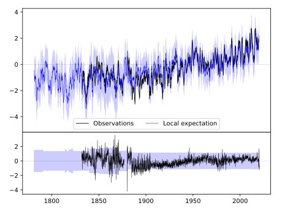
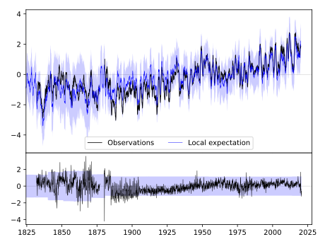
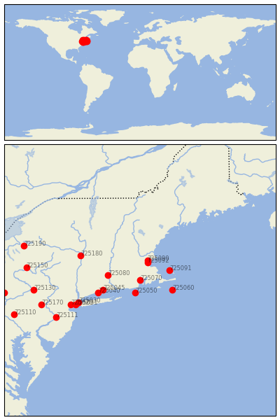

PROVIDENCE WSO AP [USA]


| Neighbour | Name | Country | Distance | Lon/Lat | Years |
|---|
| 725070 | PROVIDENCE WSO AP | USA | 0 | -71.4, 41.7 | 1831-2020 |
| 725050 | BLOCK ISLAND STATE A | USA | 58 | -71.6, 41.2 | 1880-2020 |
| 725092 | BOSTON_CITY_WSO | UNITED STATES | 81 | -71.1, 42.4 | 1743-2013 |
| 725090 | READING | USA | 92 | -71.1, 42.5 | 1871-2020 |
| 725091 | PROVINCETOWN | USA | 108 | -70.2, 42.1 | 1884-2019 |
| 725080 | HARTFORD/BRADLEY INT | USA | 110 | -72.7, 41.9 | 1954-2020 |
| 725060 | NANTUCKET | USA | 117 | -70.1, 41.3 | 1961-2020 |
| 725045 | NEW HAVEN, CONNECTIC | USA | 132 | -72.9, 41.3 | 1781-2019 |
| 725040 | BRIDGEPORT/SIKORSKY | USA | 152 | -73.1, 41.2 | 1948-2020 |
| 725180 | ALBANY INTL AP | USA | 226 | -73.8, 42.7 | 1795-2020 |
| 725030 | NEW YORK/LA GUARDIA, | USA | 231 | -73.9, 40.8 | 1822-2020 |
| 725031 | NEW_YORK_WB_CITY | UNITED STATES | 244 | -74.0, 40.7 | 1822-1977 |
| 725020 | NEWARK/INT'L-ARPT--- | USA--------- | 259 | -74.2, 40.7 | 1931-2020 |
| 725111 | TRENTON | USA | 330 | -74.8, 40.2 | 1866-1980 |
| 725170 | ALLENTOWN AP | USA | 352 | -75.4, 40.7 | 1887-2020 |
| 725130 | WILKES-BARRE-------- | USA--------- | 360 | -75.7, 41.3 | 1949-2020 |
| 725150 | BINGHAMTON GREATER A | USA | 384 | -76.0, 42.2 | 1890-2020 |
| 725190 | SYRACUSE WSO AP | USA | 416 | -76.1, 43.1 | 1843-2020 |
| 725110 | LEBANON 2 W | USA | 455 | -76.5, 40.3 | 1888-2019 |
| 725140 | WILLIAMSPORT RGNL AP | USA | 461 | -76.9, 41.2 | 1873-2020 |